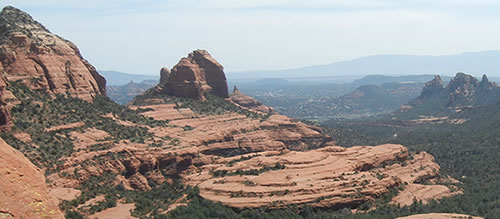

Relative Hyperlinks Explained
Recall that when linking to a file located in the same folder or directory, the value of the href attribute is the name of the file.
href="contact.html">Contact
When linking to a file that is inside a folder within the current directory, use both the folder name and the file name in the relative link.
href="rooms/canyon.html">Canyon Room
When linking to a file that is up one directory level from the current page, use the “. . / ” notation.
href="../index.html">Home
When linking to a file that is in a folder on the same level as the current folder, the href value will use the “. . / ” notation to indicate moving up one level; then specify the desired folder.
href="../events/weekend.html">Weekend Events
Instructions for Completing this Assignment

- Step 1
- Download the zipped folder and extract it to your computer. Rename the folder Casita_YourLastName
- Step 2
- Open all html pages using a text editor.
- Step 3
- Fix all broken links in the nav element for each page. There are 6 pages total. Hint: You will need to look inside the folder Casita_YourLastName to complete this. There is also explainations of relative hyperlinking on the canyon.html page.
- Step 4
- Place the casita.css file in a folder called styles.
- Step 5
- Link ALL pages to the styles/casita.css external stylesheet.
- Step 6
- Connect to your SSH account.
- Step 7
- Upload all files to the SSH server in the public_html folder. Hint: You do not upload the folder Casita_YourLastName, just the files and folders inside Casita_YourLastName.
- Step 8
- Test your pages to make sure all links work.
- Step 9
- Paste your live link in the dropbox assignment called "Casita: Fix Broken Website". Submit
You can watch the video tutorial for help with uploading your files for this assignment.